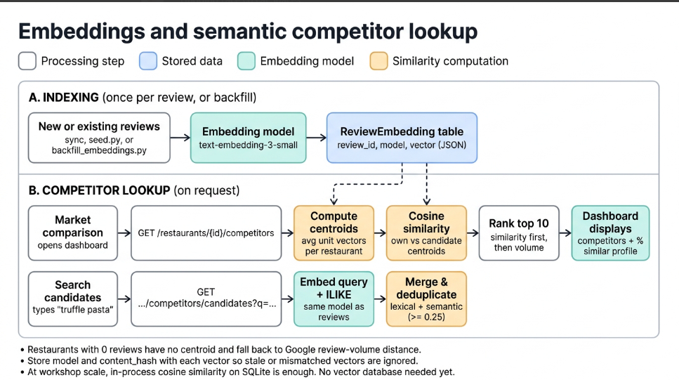

Phase 3: see how you compare with your competitive set, and hear the AI summary aloud.
Project demo | FastAPI + OpenAI + Hugging Face
The MVP analyzes one restaurant at a time. Phase 3 compares it with its competitors on the same criteria and reads the summary aloud.
Suggest up to 10 competitors, ranked by review similarity. Owners can pin, dismiss or add restaurants by hand.
Compare six criteria against competitors and label each one: Learn, Keep or Attack.
Play the AI summary with a Hugging Face text-to-speech model. Text stays on screen.
Restaurants with reviews rank first, then by how similar their guest reviews are. Pin, dismiss or add manually, and the choice survives refresh.
Food, service, wait time, hygiene, ambience and price. Each row is colored and sortable by gap.
The AI explains a gap in at most two sentences, citing 2 to 3 real review quotes. No quote, no claim.
A read-aloud button plays the cached analysis summary. Text stays available if audio fails.

Gap below −0.3. Rivals rate this criterion higher.
Level with rivals, or ahead without a clear attack lead.
Gap above +0.3 and competitor average below 3.5.
A competitor needs at least 3 reviews mentioning a criterion (demo setting; 20 planned for production).
Below the minimum, the criterion shows “Not enough data” and the AI is not asked for a conclusion.
The browser never calls Hugging Face. The API token stays on the server.
A cold model gets one retry if it warms up within 5 seconds. Otherwise the user sees a clear message. Up to 64 clips are cached in memory.
Competitors with reviews are ranked by centroid similarity. GET /reviews/search matches a free-text query to review content, and falls back to keyword match when no embeddings exist. Stale vectors are skipped.
Embeddings are generated by the backfill CLI (docker compose run --rm backfill-embeddings), not during sync or analysis. Restaurants without embeddings are ranked by review volume.
Only 14 of 30 seeded restaurants have reviews, so only those can be scored in the gap table.
Radius, cuisine and price filters are not applied yet, and the Places API is not configured. Distance and price show “Not available”.
Two new tables. Both are created automatically; no existing table changes.
OpenAI and Hugging Face tokens are read from the server environment only.
The AI must cite review IDs from the given quotes. Otherwise a rule-based text is used.
Owners edit the competitive set. Analysts view it and can search candidates. Admins get 403.
Below the minimum review count, no AI conclusion. The UI says “Not enough data”.
Every OpenAI, embedding and speech call has error handling. On failure, the server falls back to volume ranking.
Evidence shows rating, text and date. Reviewer names are not shown.
Owners see up to 3 quotes from competitor reviews. This still needs sign-off.
Our plan for the next release, from the market comparison roadmap.
Find real nearby competitors with the Google Places API, using coordinates and a configurable radius.
Generate embeddings during sync and analysis, so new reviews are ranked without running the backfill CLI.
Run discovery on a schedule and cache AI explanations, so repeat views load instantly.
| Prepare slide | LoiPB |
| Embeddings (BE): store + retrieval | DanTV9, ManhHN |
| Hugging Face TTS (BE) | LinhLB1, LocPT6 |
| Diagram + data for competitor lookup | NguyenDTD |
| Presentation | MinhNN |
| Hugging Face TTS (FE) | MinhNHC |
| Embeddings (FE): competitors by region | NghiaBV3 |
Thank you for listening